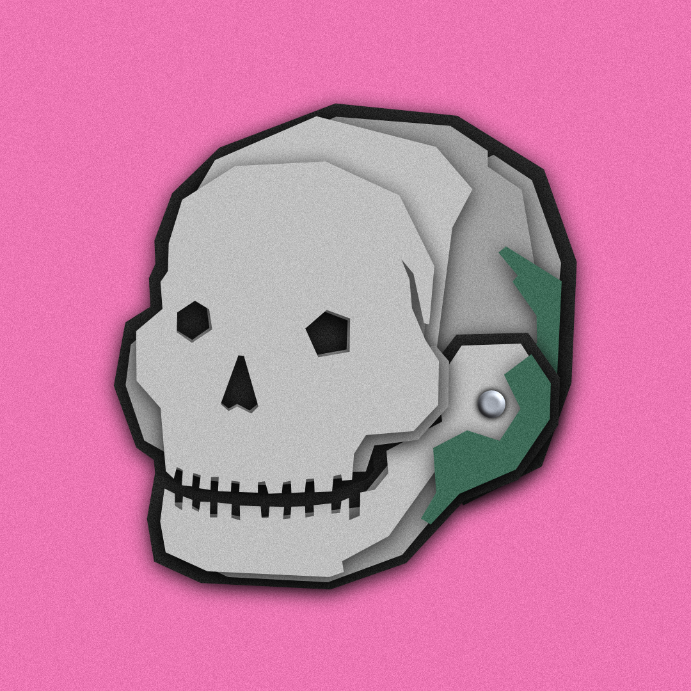
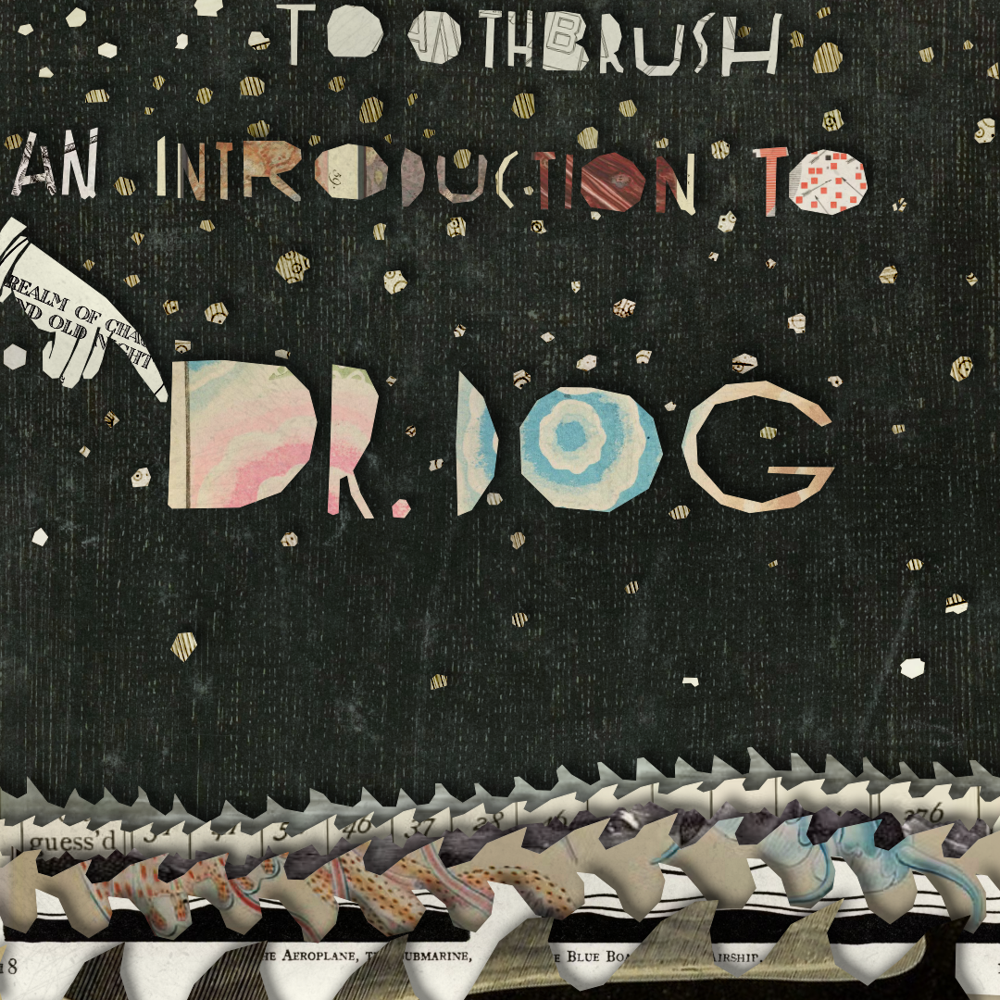
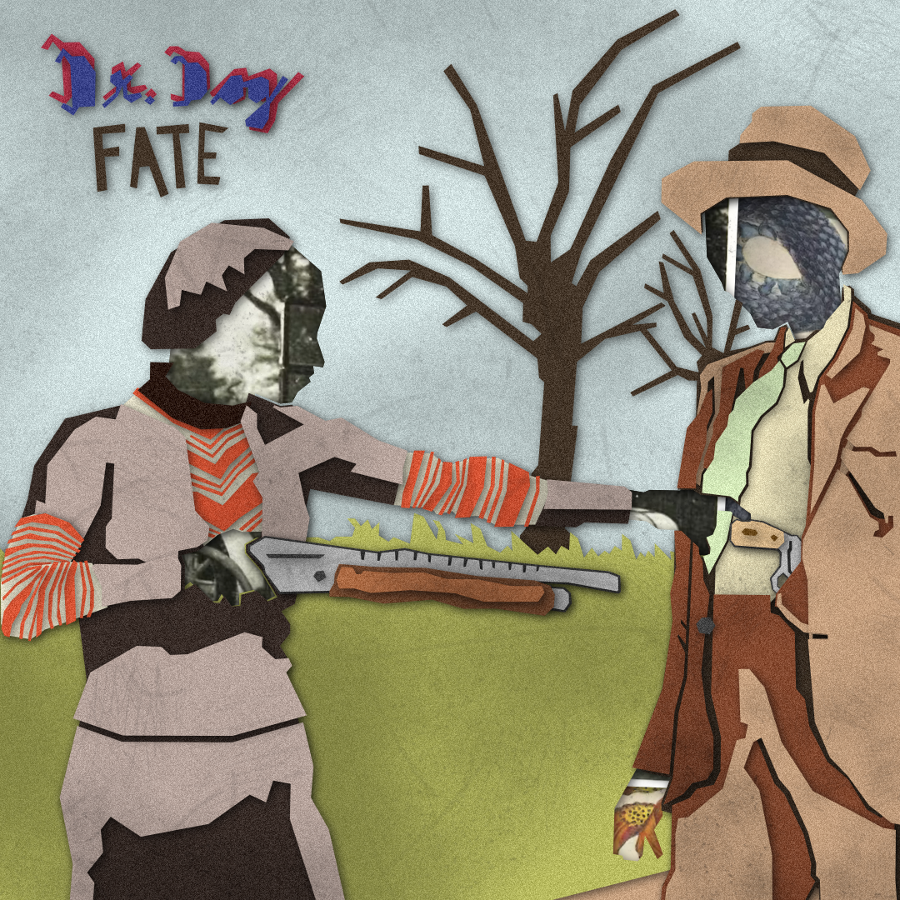
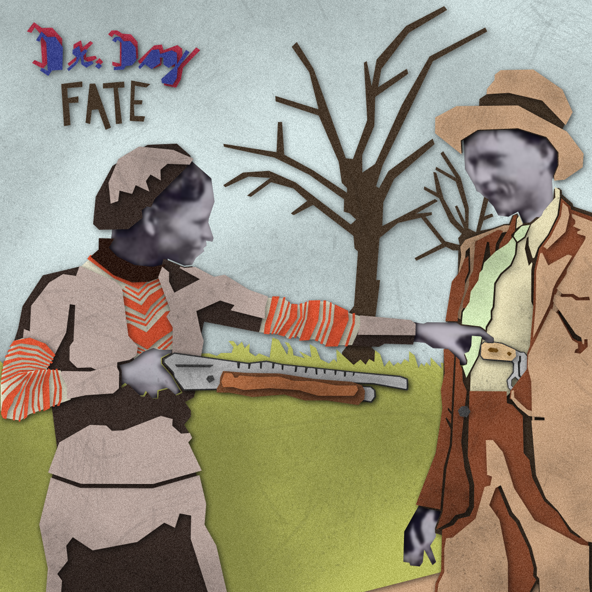
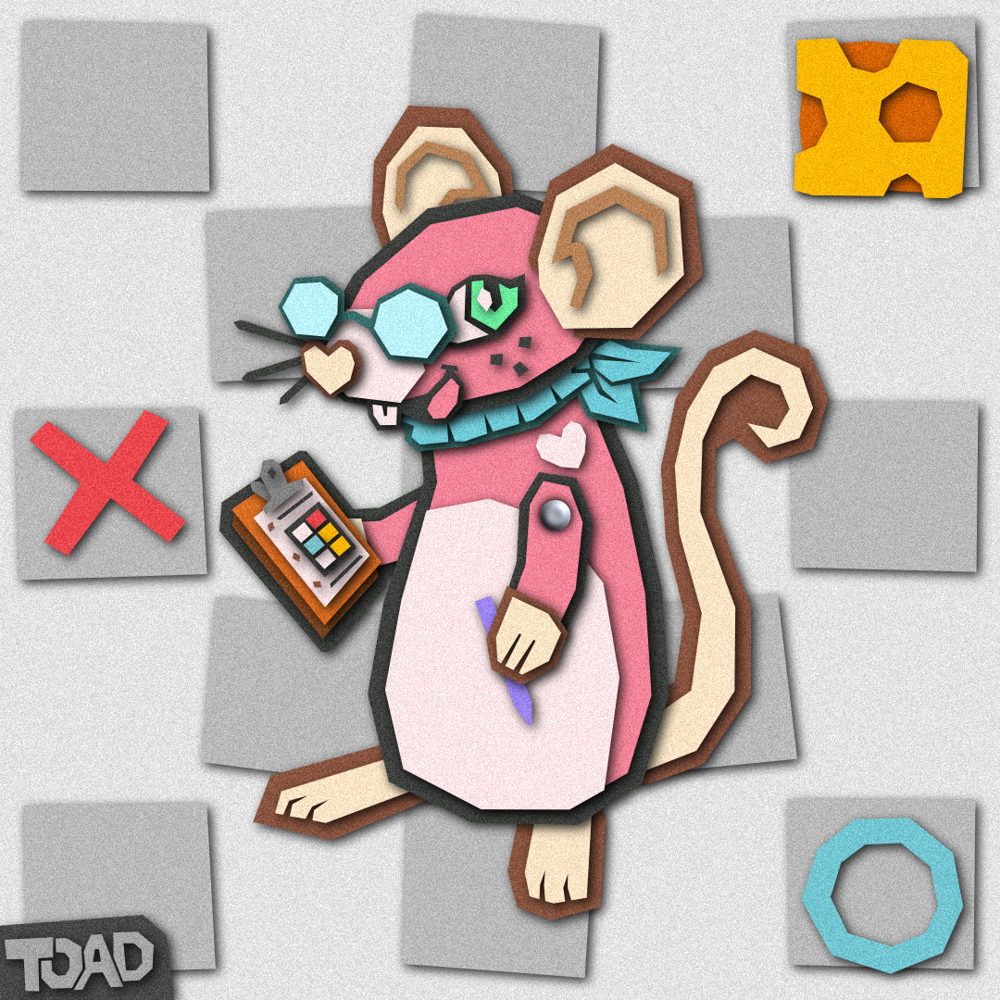

Destiny 2: Vault IconFebruary 2025
Made this for RandySandals!
Gnarthex SkullFebruary 2025
Made this for Gnarthex!
The skull this is based on was made by Fighting Island.
Credits
- Gnarthex skull by Fighting Island
Dr. Dog Album: Abandoned MansionFebruary 2025
A papercraft / mixed-media recreation of the album art for Dr. Dog's Abandoned Mansion.

Credits
Dr. Dog Album: ToothbrushFebruary 2025
A papercraft / mixed-media recreation of the album art for Dr. Dog's Toothbrush.
Credits
- Dr. Dog
- Earl Harvey Lyall's art for The Cubies' ABC
- "Unicorn" - Edward Topsell
- "Chemistry of Combustion and Illumination" - Edward Livingston Youmans
- A page from "A Book of Stone: Adam Wirsing’s Marmora (1776)" by Adam Wirsing
- Untitled - Shin-Bijutsukai
- "Milton's universe before the creation of earth and its heavens" - William Fairfield Warren
- "Imaginary Section of an 'artificial Horizon of a Globe', with 'all the stars scattered promiscuously'." - Thomas Wright
- "Comet of 1811" - Flowers of the Sky
- "The Aeroplane, the Submarine / The Blue Boat and the Airship" - Jean de Bosschère
- "Medusae of the World: Plate 60, Volume 3" - A. G. Mayer
- “Strangers to the Universal Panic.” - Camille Flammarion
- "Telepathic Transference of Numbers Between Two People" - The Naturalisation of the Supernatural
- "Penguins on a Sea-Worn Iceberg Resembling a Whale" - Frederick Albert Cook
- "The Nothingness That Was Prior to the Universe" - Robert Fludd
Dr. Dog Album: FateFebruary 2025
Papercraft / mixed-media recreations of the album art for Dr. Dog's Fate.
Image faces:
Bonnie and Clyde faces:
Dr. Dog Album: Critical EquationJanuary 2025
A papercraft recreation of the album art for Dr. Dog's Critical Equation.

Credits
Squeakross: NiniJanuary 2025
A papercraft / mixed-media recreation of Nini from the game Squeakross!
Credits
- Squeakross
- I believe Nini was created by Luka The Mouse?
Sleepy PondJanuary 2025
Made this for FletchMakes!


All works here were made without the use of generative AI.
Most real images were taken from Public Domain Image Archive, and I'll do my best to credit each image under the artwork!
Most real images were taken from Public Domain Image Archive, and I'll do my best to credit each image under the artwork!